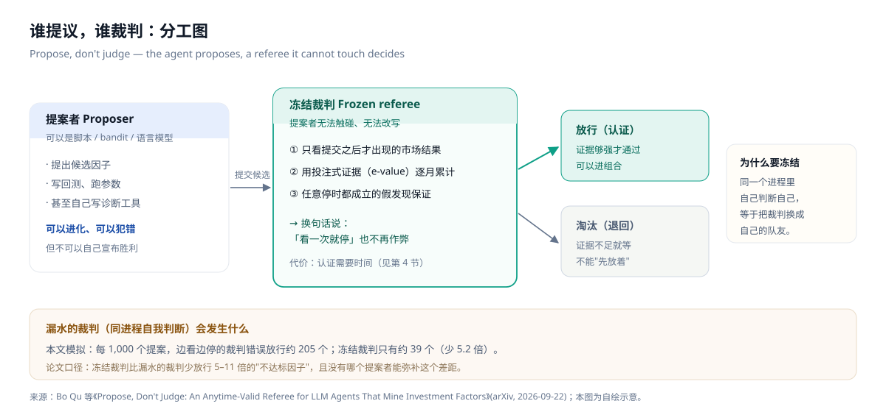
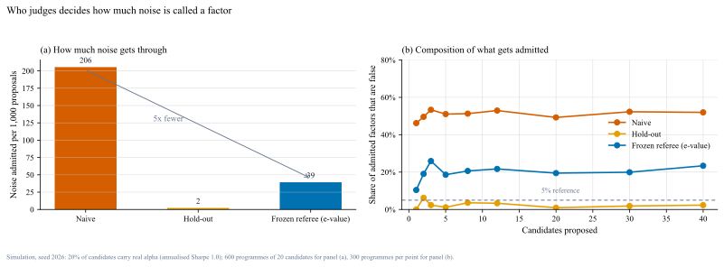
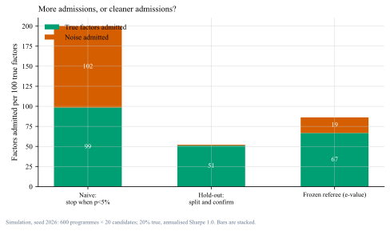
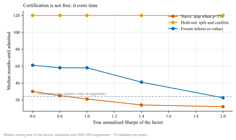

AI 挖因子，谁来当裁判Let the agent propose; let the referee judge
2026 年 9 月，三篇论文从三个角度撞上同一件事：提议可以交给 AI，裁判必须留在外面。我把主论文的机制做了一遍简化复现——边看边停的裁判，每 1,000 个提案会错误放行约 205 个；冻结裁判只有 39 个，代价是等待时间。Three papers published within one week of each other in September 2026 point at the same division of labour: let the agent propose, keep the judge outside. In my replication a peeking referee wrongfully admits about 205 of every 1,000 proposals; a frozen one admits 39 — at the price of waiting.
发布 / Published
2026-09-29
版本 / Version
v1.0
阅读 / Reading
约 14 分钟
标签 / Tags
信号 · 模型与验证
数据 / Data
模拟实验（代码可复现）+ 三篇 2026 年 9 月 arXiv 论文Simulation (code included) + three arXiv papers from September 2026
TL;DR
AI 已经接管了因子研究的全流程：提因子、回测、筛选、淘汰。主论文问的是——这些工作里，哪一件应该收回来？答案是判断。Agents now run the whole factor research loop. The paper asks which of those jobs should be taken back: the answer is judging.
机制是"冻结裁判"：裁判只看提交之后才出现的市场结果，用投注式证据（e-value）逐月累计，因此任何时刻停止都有效——"边看边停"不再能作弊。[1]The mechanism is a frozen referee scoring only on post-submission outcomes, accumulating betting evidence, valid at any stopping time.[1]
我的复现：差距是 5.2 倍。每 1,000 个提案，边看边停的裁判错误放行 205 个，冻结裁判 39 个，先切一半数据再确认的 2 个——而三者拿到的真因子分别是 99%、67%、51%。My replication: 205 vs 39 vs 2 wrongful admissions per 1,000 proposals — while capturing 99%, 67% and 51% of the true factors.
认证的价格是时间。真因子年化夏普 1.0 时，冻结裁判平均要等 58 个月；夏普 2.0 时降到 22 个月（约 480 个交易日，与论文说的"约 500 个交易日"同一量级）。先切一半数据的做法则固定要等满十年。Certification costs time: 58 months at Sharpe 1.0, 22 months at 2.0 — the same order of magnitude as the paper's ~500 trading days. The split-sample rule always waits the full decade.
另两篇是配套的警告。同一段文本，七个模型给出的指标排序相关平均只有 0.52；而"让 agent 自我进化"在 18 条长周期轨迹里没有一致增益。AI 会更强，但"更强"目前还没有稳定兑现——这更说明裁判要留在外面。[2][3]Two companion warnings: across seven models, textual measures rank-correlate at only 0.52 on average; and self-evolving agents showed no consistent gain across 18 long-horizon trajectories.[2][3]
口径 · Scope
本文有两类材料，我会分开标注：① 论文事实——三篇 2026 年 9 月的 arXiv 预印本，链接在最后一节，均于 2026-09-29 核对可打开；② 我的复现——我自己的合成世界（月度收益、独立同分布、单一波动），实现了一个简化版的投注式裁判，不是论文的原始代码（论文未附公开代码）。因此本文的绝对数字只能读作"同一量级的示意"，不能读作论文结论的独立验证。Two kinds of material, labelled separately: paper facts (three September 2026 arXiv preprints, links checked on 2026-09-29) and my own replication in a synthetic world, using a simplified betting-based referee rather than the authors' code, which is not public. Read my numbers as the same order of magnitude, not as independent confirmation.
01为什么写这篇Why this note exists
上个月我用一篇文章讲过因子筛选的困境：候选太多、样本太少，按 t 值排名挑出来的东西，样本外大多是噪声。[4] 那篇的结论是"筛选的天花板由信噪比决定"。但它留了一个没说透的问题：如果挖掘这件事本身被自动化了，会发生什么？A previous note argued that factor screening is capped by signal-to-noise: rank by t-statistic and most survivors are noise out of sample. It left one question open — what happens when the mining itself is automated?[4]
2026 年 9 月这一周给出了答案，而且是从三个不同方向来的：一篇讲谁来判断，一篇讲连测量都不稳定，一篇讲自我进化没有稳定收益。三篇合起来是一句对做研究的人很重要的话——AI 让"想法"变便宜了，于是稀缺的东西变成了"裁判"。The last week of September 2026 answered it from three directions: who judges, why even measurement is unstable, and why self-evolution has not delivered. Together: AI made ideas cheap, so the scarce thing is now the referee.
02主论文：提议权与判断权的分离The main paper: separating proposing from judging
《Propose, Don't Judge》的开场是一句很直白的话：语言模型 agent 现在已经跑完了整个量化因子研究流程——提出因子、回测、选出幸存者、淘汰其余的。[1] 作者问：这些工作里，哪一件应该收回来？"Propose, Don't Judge" opens plainly: language-model agents now run the entire quantitative factor pipeline — proposing, backtesting, selecting survivors, retiring the rest. The authors ask which of those jobs should be taken back.[1]
他们的答案是"受约束的自我进化"：agent 可以提议，但必须由一个它不能触碰的冻结裁判来判定。裁判只根据提交之后才出现的市场结果打分，方式是"投注"——每来一期数据就押一次，把证据累加成一个非负的过程。这样的检验在任何停止时刻都有效，也就是说：agent 再怎么"看一次就停"，统计保证都不会被破坏。Their answer is governed self-evolution: the agent may propose, but a frozen referee it cannot touch decides. The referee scores only on outcomes revealed after submission, betting each period and accumulating a non-negative process — valid at every stopping time, so peek-and-stop no longer breaks the guarantee.

图 1｜提议权与判断权的分离（来源：依据论文 [1] 自绘；本图为示意，不是论文原图）。
这是全文的地图：左边可以进化、可以犯错，中间那层不能碰、不能改，右边只有"放行"与"淘汰"两个出口。关键不是模型多聪明，而是裁判不在模型手里。The map of the whole argument: the left side may evolve and make mistakes, the middle layer cannot be touched or rewritten, and the right side has only two exits — admit or retire.
论文的实验设计也值得抄一遍：三个提案者（脚本、bandit、语言模型）× 一个冻结裁判 + 三个"故意漏水"的裁判，先在一个种了真值的合成世界里比，再放到 CSI 500 上做十年走查。结果有两条：The experiment design is worth copying: three proposers (a script, a bandit, a language model) crossed with the frozen referee and three deliberately leaky ones — first in a synthetic world with planted truth, then a ten-year walk-forward on the CSI 500.
谁当裁判，决定放行多少噪声：冻结裁判比漏水的裁判少放行 5–11 倍的"不达标因子"，而且没有任何提案者能补上这个差距。Who judges sets the noise admitted: the frozen referee lets through 5–11× fewer sub-threshold factors, and no proposer closes that gap.
谁提议，决定产出多少：语言模型胜过脚本、与 bandit 持平，并且多出一样 bandit 没有的能力——给自己写诊断工具。Who proposes sets the yield: the language model beats the script, matches the bandit, and adds one capability a bandit lacks — writing its own diagnostic probes.
论文事实 · Paper facts
论文自己给了三个价格：① 被认证的真因子平均要等约 500 个交易日；② 被认证组合的夏普落后于没有门槛的版本；③ 裁判的结论不受提案者策略影响——"判断属于流程，提议与造工具属于 agent"。[1]The paper names three prices: an admitted true factor waits about 500 trading days; the certified portfolio's Sharpe trails the ungated one; and the verdict does not depend on the proposal policy. Judging belongs to the procedure; proposing and instrument-making belong to the agent.[1]
03我的复现：三个裁判，三张成绩单My replication: three referees, three scorecards
论文没有公开代码，所以我用自己的方式把机制跑了一遍。世界很简单，但足够说明问题：一个提案者连续提出候选因子，其中 20% 是真的（年化夏普 1.0），其余是纯噪声；每个候选有 10 年月度数据，三种裁判独立判断。The paper ships no code, so I rebuilt the mechanism my own way. The world is simple but sufficient: an agent proposes candidates one at a time, 20% carry real alpha (annualised Sharpe 1.0) and the rest are pure noise; each candidate has ten years of monthly data and three referees judge independently.
边看边停：每个月做一次检验，看到单尾显著就宣布（现实里最常见的做法）。Peeking: test every month and declare as soon as the one-sided test is significant — the most common practice in the wild.
先切一半：前五年筛选、后五年确认，两段都过才宣布。Split and confirm: screen on the first five years, confirm on the next five.
冻结裁判：投注式证据逐月累计，达到 1/α 才宣布（我的简化版 e-process）。Frozen referee: accumulate betting evidence monthly and declare at 1/α — my simplified e-process.

图 2｜谁当裁判，决定放行多少噪声（来源：本文模拟，tools/make_figs_referee.py，固定种子）。
左边是本文最重要的一个数字：每 1,000 个提案，边看边停错误放行 205 个，冻结裁判 39 个——5.2 倍，正好落在论文报告的 5–11 倍区间里。右边解释为什么：边看边停对"噪声"和"真信号"一样敏感，所以它放行出来的东西里约有一半是噪声；而先切一半的做法几乎不放噪声，代价见下一张图。The headline number: 205 wrongful admissions per 1,000 proposals for the peeking referee versus 39 for the frozen one — a factor of 5.2, inside the paper's 5–11× range. The right panel explains why: peeking reacts to noise as readily as to truth.

图 3｜放行得多，还是放行得干净（来源：本文模拟）。
典型的"产量 vs 纯度"取舍：每 100 个真因子，边看边停放行 99 个真、101 个假；冻结裁判放行 67 个真、19 个假；先切一半最干净（51 真、1 假），但它把一半的真因子直接丢掉了——因为确认那一段本身也要过门槛，而门槛会杀掉小效应。A classic yield-versus-purity trade-off: per 100 true factors, peeking admits 99 true and 101 false; the frozen referee 67 true and 19 false; the split-sample rule is cleanest (51 and 1) but throws away half the truth.
04认证的价格是时间The price of certification is time
冻结裁判不是免费的午餐。它要求"提交之后的数据"，而攒证据需要时间——效应越弱，等得越久。这和我在因子筛选那篇里算过的"164 年"是同一件事的两个侧面：统计上没把握，就只能用时间去换。The frozen referee is not free: it needs post-submission data, and evidence takes time. The weaker the effect, the longer the wait — the same physics as the 164 years computed in the screening note.

图 4｜认证的等待时间（来源：本文模拟；横轴是真因子的年化夏普）。
真因子夏普 1.0 时，冻结裁判要等 58 个月；夏普 2.0 时缩短到 22 个月——约 480 个交易日，与论文说的"约 500 个交易日"是同一量级。而"先切一半"是条水平线：无论信号多强，都要等满 120 个月。这就是论文里"被认证组合的夏普落后"的来源。At Sharpe 1.0 the frozen referee waits 58 months; at 2.0 it drops to 22 — about 480 trading days, the same order of magnitude as the paper's ~500. The split-sample line is flat: 120 months regardless of signal strength.
表 1｜三种裁判的成绩单（本文模拟，固定种子）Table 1｜Three referees, three scorecards (my simulation, fixed seed)
裁判Referee
每千提案错误放行Noise per 1,000
真因子放行率True admitted
放行物中噪声占比Noise share of admissions
等待时间（夏普 1.0）Wait (Sharpe 1.0)
边看边停Peeking
205
99%
约一半
21 个月
冻结裁判Frozen referee
39
67%
23%
58 个月
先切一半Split and confirm
2
51%
2%
固定 120 个月
注：三者不是"好/坏"排序，而是三种不同的取舍。真正的问题是"谁在决定什么时候停"，而不是"门槛设多高"。Note: three different trade-offs, not a ranking. The real question is who decides when to stop, not how high the bar is.
05第二篇：同一段文本，七个模型七个数字Paper two: same text, seven models, seven numbers
如果 AI 连"把文字变成数字"这一步都不稳定，那么再好的裁判也救不了上游。[2] 这篇论文拿了标普 500 公司的电话会议记录，用 7 个不同厂商的大模型、13 个常用指标（情绪、管理层清晰度、不确定性、气候与政治风险等）各打一遍分，然后看结果有多一致。If AI cannot even turn text into numbers reliably, no referee can save the upstream.[2] The authors scored S&P 500 earnings-call transcripts with seven models from different providers across thirteen measures.
跨模型排序相关平均只有 0.52——同一段文本，"谁更清晰""谁的风险更高"这样的排序，换一个模型就换一半。Cross-model rank correlation averages 0.52 — swap the model and half the ranking changes.
分歧不是"文本本身有歧义"：与厂商无关的共同成分只解释了 34% 的分数方差，其余是模型特有的部分；而且这种分歧并不能预测分析师或市场的后续分歧。The disagreement is not ambiguity in the text: provider-common components explain only 34% of score variation, and the disagreement does not predict later analyst or market disagreement.
下游结论会跟着变：用不同模型生成的变量做回归，系数的大小、符号、显著性都会变。把多个模型平均能让排序更稳，但分数水平仍然取决于你选了哪几个模型。Downstream inference follows: coefficient magnitudes, signs and significance shift across models. Averaging stabilises rankings, but levels still depend on which models are in the ensemble.
推断 · Inference
这条结论对"AI 因子"的杀伤力比很多人以为的大：如果变量的值取决于模型选择，那么基于它做的回测就不只是"策略风险"，还带着"测量风险"。我的做法是把它写进流程——同一因子至少两个厂商的模型各跑一遍，只有都成立的结论才进入下一步。This bites harder than it looks: if a variable's value depends on model choice, its backtest carries measurement risk, not just strategy risk. My rule: run at least two providers and only advance conclusions that hold under both.
06第三篇：自我进化没有稳定增益Paper three: self-evolution without consistent gain
第三篇最难写进宣传语，但它可能是最有用的一篇。[3] 它问的是：让 agent 在长周期因子挖掘里"积累能力"（把研究反馈沉淀成可复用的技能、工具、规则），下一次会更好吗？The third paper is the hardest to turn into a slogan and possibly the most useful.[3] It asks whether accumulated research capabilities make the next round better.
18 条长周期轨迹里，"能力自进化"版本没有一致增益。Across 18 long-horizon trajectories, capability evolution produced no consistent gain.
48 个续跑分支（同一个历史状态、同一个因子组合，只换能力集）里，积累的能力同样没有稳定胜出。Across 48 continuation branches from the same state, accumulated capability did not consistently outperform either.
但调参仍然有用：对已有因子结构做参数微调，反而能改善组合——把旧东西调好，比幻想新能力更实在。Yet parameter tuning of existing structures still improved the portfolio — improving what you have beats imagining new powers.
候选的价值取决于状态：有些当初被筛掉的候选，在原始状态下其实有正的边际价值；但把所有被筛掉的候选按顺序重新提交一遍，最终组合的 IC 反而略降。顺序与状态比"单个候选好不好"更重要。Candidate value is state-dependent: some screened-out candidates had positive marginal value at the original state, yet resubmitting all of them sequentially slightly lowered final IC.
07三篇合起来：一张分工表Three papers, one division of labour
表 2｜谁负责什么（三篇论文的并集）Table 2｜Who does what: the union of the three papers
环节Stage
交给谁Owner
理由Why
提候选、造工具Propose, build instruments
AI agent（可进化）The agent (evolvable)
语言模型样本外产出最高，还能自己写诊断探针It yields most and writes its own probes
判断（放行/淘汰）Judge: admit or retire
冻结裁判（AI 不可触碰）A frozen referee outside the agent
同样的提案者，换裁判就是 5–11 倍差距Same proposer, 5–11× difference by referee
测量（文本→变量）Measurement: text to variables
多模型交叉 + 明示不确定性Multiple models, stated uncertainty
跨模型排序相关只有 0.52，单模型结论不可靠Cross-model rank correlation is only 0.52
留痕Record-keeping
流程，而不是人The process, not a person
提案总数是分母；没有分母的显著性没有意义The count of proposals is the denominator
五条可以今天就用的规则
把裁判冻结起来：不同的代码库、不同的进程、不同的人复核；裁判的代码在研究期内不可修改。Freeze the referee: separate codebase, separate process, separate reviewer; frozen for the duration of the study.
用"随时有效"的检验（e-value / 置信序列）替代"看到 p<0.05 就宣布"——本文模拟里这一个替换就带来 5 倍差距。Use anytime-valid evidence (e-values, confidence sequences) instead of declaring on the first p<0.05.
记录提案总数，把它当作分母写进报告：研究会议上看的是"提了多少个、放行几个、其中几个是真的"。Record the number of proposals and report it as the denominator.
把认证时间写进预期：如果一套流程承诺"两周出信号"，它要么门槛很松，要么在偷偷边看边停。Budget the certification time. A process promising signals within two weeks is either loose or peeking.
文本变量跨厂商验证，并把"模型选择"当成方法论的一部分披露，就像披露数据来源一样。Cross-validate text variables across providers and disclose model choice like a data source.
08局限与反方观点Limits and the other side
我的世界是合成的。独立同分布的正态收益、单一波动、没有制度切换、没有成本、没有拥挤度。它能说明"机制"，不能说明真实市场的量级。My world is synthetic. I.i.d. Gaussian returns, single volatility, no regimes, no costs, no crowding. It shows a mechanism, not a market magnitude.
我的裁判是简化版。我用 normal-mixture e-process 代替论文的投注方案；绝对数字会不同（它们报告 5–11 倍，我得到 5.2 倍，属于同一量级）。论文没有公开代码，所以我无法逐行对齐。My referee is a simplification. A normal-mixture e-process stands in for their betting scheme; absolute numbers differ (they report 5–11×, I get 5.2×).
三篇都是 2026 年 9 月的预印本，尚无第三方复现。我把"论文事实"与"我的复现"分开写，就是为了不让"新"变成"可信"的代名词。All three are September 2026 preprints with no third-party replication yet — which is why the two layers of evidence are kept apart.
反方一：严格裁判会让你错过行情。确实。等 58 个月的信号可能错过一个完整周期——这就是"认证组合夏普落后"的意思。所以裁判要与资金的时间尺度匹配，而不是越严越好。Objection one: strict referees cost you the move. Waiting 58 months can miss a cycle; certification must match the investor's horizon.
反方二：先验可以替代统计。如果候选来自明确的经济机制，门槛当然可以放宽——这不是反对统计纪律，而是说纪律与先验是两种不同的证据。Objection two: priors can substitute for statistics. Candidates grounded in a clear mechanism justify a looser bar; discipline and priors are different kinds of evidence.
09我的判断My take
观点 · Opinion
这三篇合起来，其实在描述一次"稀缺性的转移"：过去研究里最贵的是想法，现在想法便宜了——贵的是"能证明一个想法不成立"的能力。谁的流程能诚实地淘汰东西，谁的研究速度才有意义；否则你只是在以更快的速度积累错误。Together the papers describe a shift in scarcity: ideas used to be expensive; now the expensive thing is the ability to show an idea is wrong. A pipeline that can honestly retire things is what makes speed meaningful.
所以对我来说，操作含义只有一条：把"谁来判断"写进流程，而不是留给自觉——裁判冻结在提案者之外、提案数记在分母里、认证时间写进预期。这三件事不需要新模型，今天就能做。The operational takeaway is one line: write "who judges" into the process instead of leaving it to good intentions — a frozen referee, a recorded denominator, and a budgeted certification time.
Bo Qu, Mingguang Chen, Licheng Wang (2026-09-22). Propose, Don't Judge: An Anytime-Valid Referee for LLM Agents That Mine Investment Factors. arXiv.
arxiv.org/abs/2609.27051（本文主论文；写作时未发现公开代码仓库）
Hamid Boustanifar, Sasan Mansouri (2026-09-25). Same Text, Different Numbers: The Divergence of LLM-Based Measures. arXiv.
arxiv.org/abs/2609.31013
Siyuan Li, Jiangfeng Zhang, Rui Yao, Weihua Qiu, Mingyang Xu, Zixuan Yuan (2026-09-27). EverMine: Dissecting the Self-Evolution of Research Capabilities in Long-Horizon Alpha Research. arXiv.
arxiv.org/abs/2609.33524
Aylon (2026). AI 挖因子，谁来当裁判. Notes, v1.0. https://aayloo.github.io/notes/ai-factor-referee/
13更新日志Changelog
版本Version
日期Date
改动Change
v1.0
2026-09-29
初版：三篇 2026 年 9 月论文 + 自建裁判模拟（四张图、五条来源，链接已核查）。First version: three September 2026 papers plus my own referee simulation (four figures, five sources, links verified).